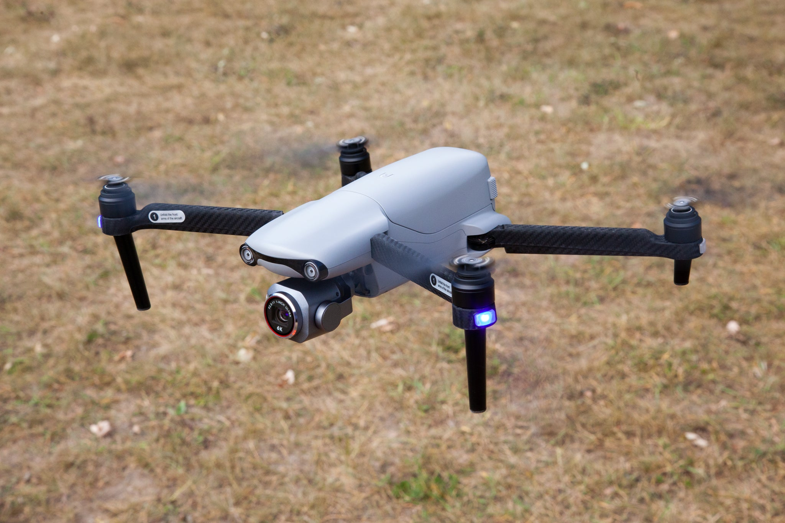
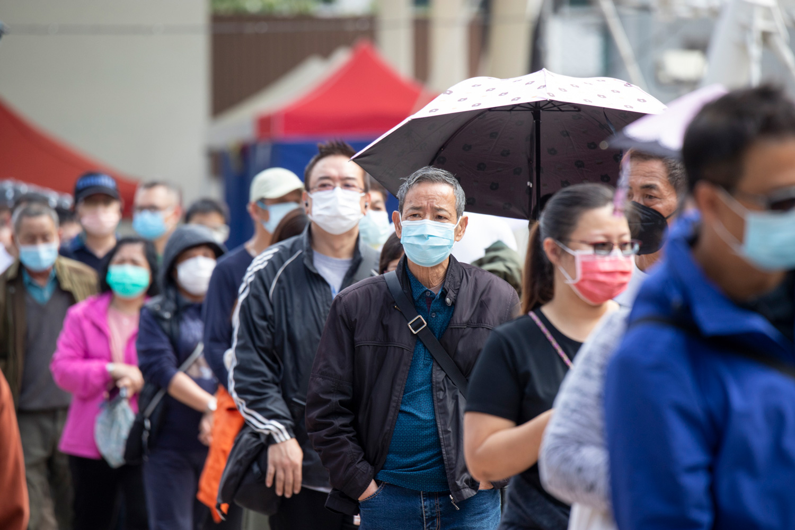

پروژهها

تشخیص پهباد با YOLOv8
این پروژه از مدل YOLOv8 برای شناسایی پهبادها در تصاویر استفاده میکند و دقت بالایی در تشخیص سریع اشیا دارد.
بررسی پروژه

تشخیص ماسک روی صورت
در این پروژه با استفاده از مدلهای یادگیری عمیق، ماسکهای صورت در تصاویر شناسایی میشوند تا رعایت پروتکلهای بهداشتی بررسی شود.
بررسی پروژه
عددهای دستنویس با GAN
این پروژه با بهرهگیری از شبکههای مولد تخاصمی (GAN) اعداد دستنویس مصنوعی تولید میکند که برای تمرین مدلهای تشخیص دستنویس مناسب است.
بررسی پروژه
اسکنر کاغذ با مدل U-Net
در این پروژه از مدل U-Net برای اسکن و پردازش تصاویر کاغذها استفاده میشود تا مرزها و محتوای کاغذها به صورت دقیق استخراج شود.
بررسی پروژه